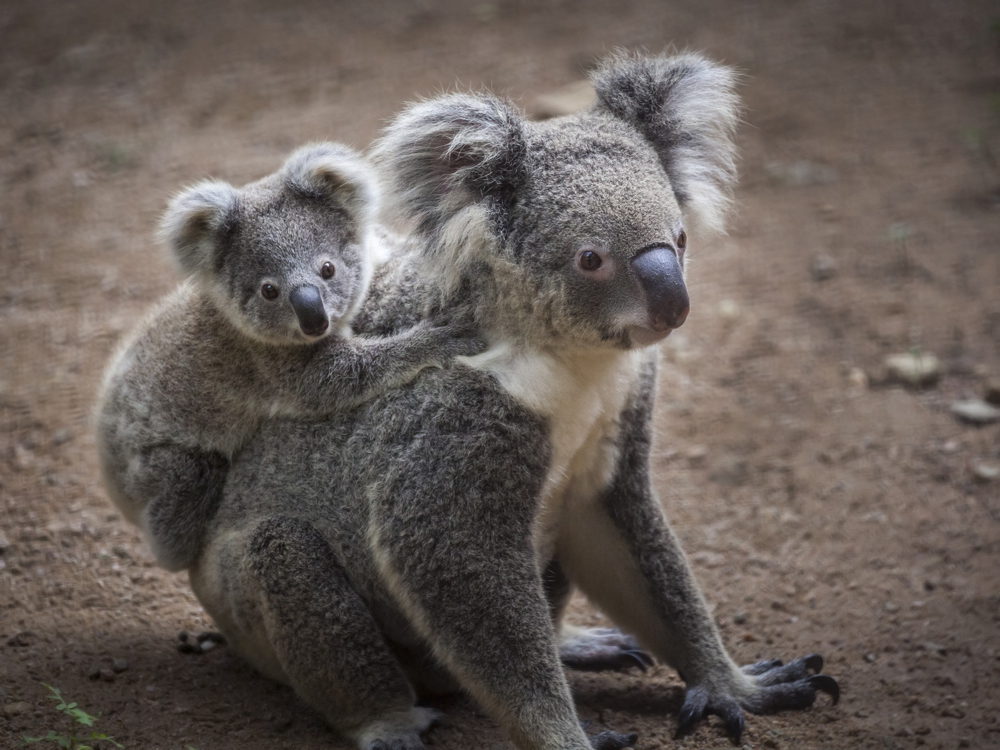

Como os coalas se reproduzem?
Os coalas são marsupiais, o que significa que as fêmeas possuem uma bolsa (chamada de marsúpio) onde os filhotes completam seu desenvolvimento após o nascimento. A gestação dura entre 25 e 35 dias, resultando em um único filhote, que pesa cerca de 0,5 gramas ao nascer.
O filhote se prende ao mamilo dentro da bolsa e permanece lá por cerca de seis a sete meses. Após esse período, ele começa a sair da bolsa, mas ainda é carregado nas costas da mãe até completar um ano de idade.
Os coalas se reproduzem uma vez por ano, e a expectativa de vida dos machos é de cerca de 12 anos, enquanto as fêmeas vivem, em média, 15 anos.
A época de reprodução dos coalas dura cerca de quatro meses. Neste período, os machos sexualmente maduros exploram o seu território, atraindo as fêmeas no cio, e enchem o local de marcas odoríferas, emitindo simultaneamente um som semelhante a um mugido. As fêmeas demonstram em geral grande agressividade com relação aos machos, os quais repelem violentamente. O acasalamento, que dura alguns segundos, dá-se em posição vertical sobre um galho de eucalipto.Depois que terminada a conjunção, os companheiros se separam. O macho não se ocupa do sustento do filhote: tal função compete à fêmea, que só tem uma gestação por ano e geralmente só dá luz a um filhote (muito raramente dois). A gestação dura em média 35 dias.